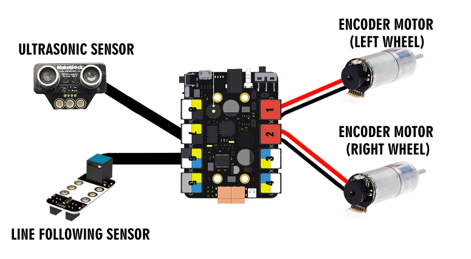

MakeBlock Line Following Robot
Overview
This blog will provide a comprehensive guide on creating and evaluating the Line Following Robot, detailing the step-by-step process of its construction, showcasing videos of it in action, concluding with offering an evaluation of its performance.
What is it?
As previously stated, the robot is able to conduct line following and is programmed using Arduino C.
How to make
Parts List
- 1x MakeBlock Ultimate 2.0
Project Schematic
Step by step
- Set up the parts as shown in the schematic
- Upload this code to the esp32:
- Start the robot and watch it line follow!
#include "MeMegaPi.h"
MeLineFollower lineFinder(PORT6);
MeMegaPiDCMotor motor1(PORT1A); // Left motor
MeMegaPiDCMotor motor2(PORT1B); // Left motor
MeMegaPiDCMotor motor3(PORT2A); // Right motor
MeMegaPiDCMotor motor4(PORT2B); // Right motor
uint8_t motorSpeed = 50;
uint8_t diffFactor = 50; // Adjust this based on the difference between motors
void setup() {
Serial.begin(9600);
}
void loop() {
int sensorState = lineFinder.readSensors();
switch(sensorState) {
case S1_IN_S2_IN: // Both sensors are inside the line
Serial.println("Both sensors are inside the line");
// Move forward at adjusted speed
motor1.run(motorSpeed); // Left motor
motor2.run(motorSpeed); // Left motor
motor3.run(motorSpeed + diffFactor); // Right motor
motor4.run(motorSpeed + diffFactor); // Right motor
break;
case S1_IN_S2_OUT: // Left sensor is inside, right sensor is outside
Serial.println("Sensor 1 is inside, Sensor 2 is outside");
// Adjust to the left
motor1.run(motorSpeed/10); // Left motor
motor2.run(motorSpeed/10); // Left motor
motor3.run(motorSpeed); // Right motor
motor4.run(motorSpeed); // Right motor
break;
case S1_OUT_S2_IN: // Right sensor is inside, left sensor is outside
Serial.println("Sensor 1 is outside, Sensor 2 is inside");
// Adjust to the right
motor1.run(motorSpeed); // Left motor
motor2.run(motorSpeed); // Left motor
motor3.run(motorSpeed/10); // Right motor
motor4.run(motorSpeed/10); // Right motor
break;
case S1_OUT_S2_OUT: // Both sensors are outside the line
Serial.println("Both sensors are outside the line");
// Stop
motor1.stop();
motor2.stop();
motor3.stop();
motor4.stop();
break;
default:
break;
}
delay(200); // Adjust delay as necessary for responsiveness
}
Videos
Evaluation
This project was successful in creating a basic line following robot that also adjusts to follow the line. However, there were some areas in which the line following robot fell short of what was expected / what would be an optimized system for its line following:
Weaknesses and Areas for Improvement
| Weakness | Improvement |
|---|---|
| The robot would sometimes not detect whether it was on a black line or not depending on the distance of the black line to the line follower | Use line following sensors with multiple arrays / multiple line followers in parallel |
| The turning with the robot was a bit too slow | Adjust the motor speed to make it spin faster |